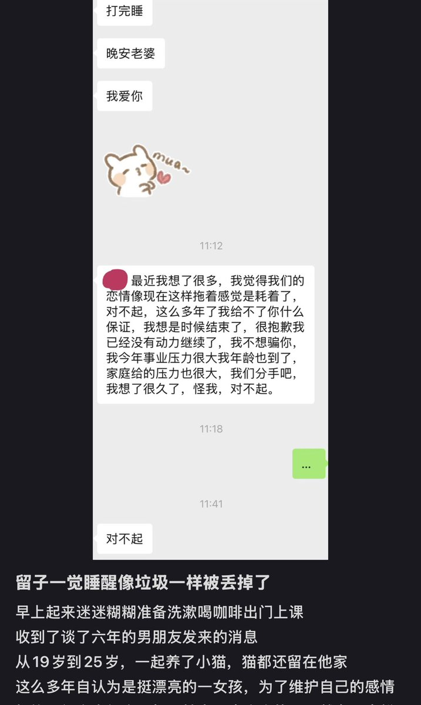

小虚空🍥
@tokerumaisurii
好难过，我也好害怕以后恋爱会这样，或者说我想试着找大概人生轨迹接下来也会一样的就好难好难，而且谁也不知道以后还会有什么变化。而且如果读研或者做全球大企业外派的驻场运维，可能三五年就要换一个站点去到地球另外一端，又更难有长住在一起的机会了吧。

永野流星
@nomorerain4pup
留学生的恋爱…哎
xhs上看到这个有点小emo https://t.co/MWqfbNsYg3